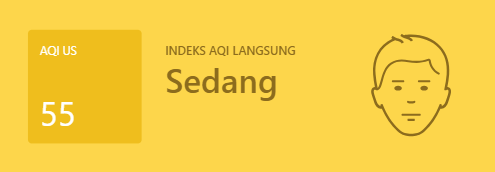

Metamorfosis Pariwisata di Provinsi Bali
- Bali mulai dikenal wisatawan di tahun 70'an dan menuju puncaknya tahun 80'an dan 90'an.
- Budaya yang erat sekali dengan kehidupan sosial dan lingkungan menjadi salah satu daya tarik dan branding Bali di kalangan wisatawan khususnya wisatawan mancanegara.

Seberapa Penting Pariwisata Dalam Menopang Perekonomian Bali?
*) Berdasarkan Konstribusi Lapangan Usaha Penyediaan Akomodasi dan Makan Minum
Pariwisata menjadi top contributor bagi perekonomian Bali. Pada tahun 2022, Lapangan Usaha Penyediaan Akomodasi dan Makan Minum berkontribusi sekitar 17,93% terhadap kue ekonomi Bali. Meskipun, sempat terjadi penurunan saat Covid-19 melanda beberapa tahun silam.
Tren Kunjungan Wisatawan
Jumlah kunjungan wisatawan baik domestik maupun mancanegara yang cenderung stabil ke Bali juga menunjukkan masih tingginya animo wisatawan ke Pulau Dewata. Meskipun di tahun 2022 sempat terjadi tren penurunan yang cukup drastis pada kunjungan wisatawan mancanegara. Kunjungan wisatawan mancanegara di tahun tersebut turun hampir sepertiga dari kondisi normal sebelum Covid-19. Sebaliknya, wisatawan domestik nampak masih menunjukkan ketertarikan untuk berkunjung ke Bali.
Peringkat Pertama Destinasi Wisata Populer di Dunia
- Bali memenangkan posisi pertama sebagai “Tujuan Wisata Paling Populer di Dunia” berdasarkan Tripadvisor Travellers’ Choice Awards. Bali berhasil menggeser London menjadi posisi kedua dan diikuti oleh Dubai.
- Penghargaan ini diberikan berdasarkan kunjungan pelancong internasional pada 2020 saat masih dibuka, serta tempat impian yang akan mereka kunjungi saat pandemi Covid-19 terjadi.
Apa yang Menyebabkan Hal Ini Terjadi?
- Selain faktor budaya dan destinasi wisata, kenyamanan lingkungan menjadi salah satu faktor penting yang dapat memengaruhi minat wisatawan untuk tetap kembali ke Bali.
- Mari kita kaji beberapa isu lingkungan yang dapat berpengaruh terhadap kenyamanan wisatawan untuk melakukan kunjungan ulang ke Bali
Isu Lingkungan
Transportasi
Dalam kurun waktu 3 tahun terakhir, terjadi tren peningkatan jumlah kendaraan di Provinsi Bali. Jumlah kendaraan di Bali pada tahun 2022 mencapai 4.756.364 unit. Angka ini bahkan melebihi jumlah penduduk Bali tahun 2022 yang mencapai 4.415.000 jiwa
Sampah
Sumber : Kementerian Lingkungan Hidup dan KehutananBerdasarkan data Kementerian Lingkungan Hidup dan Kehutanan (KLHK), Provinsi Bali menghasilkan 915,5 ribu ton timbunan sampah sepanjang tahun 2021. Dari total volume sampah tersebut, sebanyak 32.73% sampah tidak dikelola. Kondisi ini menjadikan Bali sebagai provinsi penghasil sampah terbesar ke-8 di Indonesia.
Kualitas Air Bersih
Data Susenas (Survei Sosial Ekonomi Nasional) menunjukkan bahwa persentase rumah tangga yang memiliki akses terhadap air minum bersih di Provinsi Bali dalam kurun waktu 6 tahun terakhir masih dibawah 90% .
Kualitas Udara
 Sumber : IQAir
Berdasarkan data dari website IQAir, per tanggal 18 September 2023, indeks kualitas udara Provinsi Bali yakni menyentuh angka 55 dengan kategori Sedang .

Dampak Isu Lingkungan Terhadap Kondisi Pariwisata Bali
- Berbagai indikator kondisi lingkungan tersebut menggambarkan bahwa tingginya animo kunjungan wisatawan ke Bali kurang didukung dengan kondisi lingkungan yang memadai. Sudah saatnya Bali berbenah, meninggalkan orientasi kuantitas kunjungan wisatawan atau mass tourism menuju ke pariwisata yang mengedepankan kualitas atau quality tourism. Hal ini tentu penting untuk dilakukan agar Bali tidak kehilangan peminatnya di masa depan.
Rekomendasi Kebijakan
- Sejatinya Pemerintah sudah mulai bergerak menuju pariwisata yang berkualitas dan berkesinambungan melalui berbagai program seperti:
- Bali Green Province;
- Bali Go Green;
- Kolaborasi dengan LSM Penggiat Lingkungan Hidup;
- dan lain sebagainya.
Meskipun demikian, nampaknya program pariwisata yang digulirkan masih sedikit yang menitikberatkan pada pemberdayaan komunitas masyarakat dan lingkungan. - Salah satu cara yang dapat ditempuh untuk mewujudkan pariwisata yang berkesinambungan adalah dengan melakukan pengembangan pariwisata yang turut memfokuskan kepada aspek sosiologis dan ekologis selain aspek ekonomis. Penting untuk menempatkan masyarakat sebagai pelaku utama pariwisata mulai dari tahapan perencanaan hingga pengelolaan terutama bagi Bali yang masih membranding diri dalam bingkai pariwisata budaya dan lingkungan. Dengan menempatkan komunitas masyarakat sebagai pelaku utama pariwisata dan stakeholder sebagai pelaku pendukung diharapkan tidak hanya dapat meningkatkan keuntungan secara ekonomis, tetapi mampu menjaga budaya dan lingkungan Bali tetap lestari. Sesuai dengan visi Bali: Nangun Sat Kerthi Loka Bali.